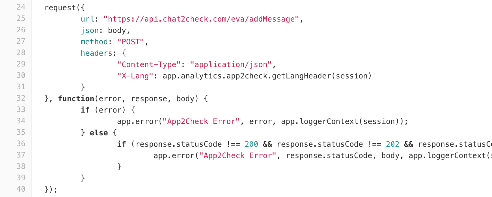
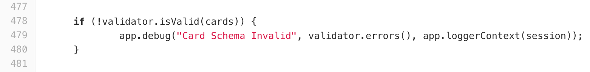

Converse ideas
Michal Wojtowicz
michal.wojtowicz@pb.com
Michal Wojtowicz
Senior Software Engineer

Self audit of code
Our issues
Business logic mixed with non-business code
Lack of error severity
 bot-framework/analytics/app2check.jsLack of error severity
 bot-framework/controllers/facebook.jsLack of monitoring
PagerDuty, monitoring of failure, monitoring of usage... We won't be notified if something break.
Challenge: new channel
New channel checklist:
- basic messages
- attachments
- live takeover
- analytics
- session transcription (history)
- ... and more
It's in contradiction to DDD
Domain Driven Design
No way to support Lambda functions
Converse relies on Websockets
Make Converse
great again
Can we?
Ideas
how to solve issues
1. Divide business logic from delivery channels
2. Message model
Standard structure for a single message3. Migration to Typescript
Implementing common model or domain logic can be then guarded by strong typing
4. Change policy of log severity
We need to change how we log errors
5. Automated monitoring
Even without changes to log policy we can set up automated monitoring to our infrastructure.
6. Separate websockets from application logic
- websocket hub used only for webchat channel
- scale application logic independently from websockets
- possibility to jump into Lambda functions
Summary
- DDD
- strong typing
- log severity
- automated monitoring
- jump into Lambda functions
- we need it sooner than later
 /in/wojtowiczmichal
/in/wojtowiczmichal michal.wojtowicz@pb.com
michal.wojtowicz@pb.com